Financial control
See where your money goes and choose what happens next.
 BilaForm
BilaForm
A daily money runway for real life. Know what’s safe to spend, see the trade-off before you tap, and reset without the guilt trip.
Built for KES budgets and the very real days between paydays.

A clearer picture of your money makes everyday choices feel easier.
See where your money goes and choose what happens next.

Give every shilling a plan before the month gets busy.

Check the trade-off before a want becomes a regret.

Make a realistic plan and move through the month with confidence.

Add your salary, side hustle, or other money coming in.
Record expenses and spot the habits shaping your month.
See a daily guide and what to reserve for essentials.
Practical tools to help your money make it through the month.

Set what you have and how many days it needs to last. Get a clear daily guide with the calculation shown.
Calculate My Daily Budget
Enter your balance, planned purchase and essentials to see the trade-off before you buy.
Check Before Buying
Add recurring small spends and see their daily, weekly and monthly impact, with ideas for reducing them.
Find My Spending Leaks
Set a savings or spending goal, track progress and compare manually with a friend.
Start a Budget Challenge
Plan monthly essentials, check your remaining balance and see when allocations exceed income.
Plan My EssentialsSubtract upcoming essentials and your buffer from the money you have. The rest becomes a simple daily guide until payday.

A planning estimate based on the figures you enter.
Adjust the numbers to match your month.
All amounts are in KES. Estimate only; real costs can change.
See your balance, daily guide, and spending categories in one simple view. Figures shown are examples for illustration only.
 SAMPLE FIGURES
SAMPLE FIGURESWhen funds are running low, VukaMonth helps you focus on the basics: food, transport and the bills that can’t wait. Get a simpler view of what remains and practical ideas for stretching it.
No perfect budget required. Just take the next small step.
01
Open the BilaForm demo and take a look around.
 02
02
Enter your income, regular expenses and payday.
 03
03
Use your daily guide to make a more informed choice.
Clear answers to help you decide if BilaForm fits the way you manage money.

Plan smarter, spend wisely and take control of your money with BilaForm.
Explore the BilaForm preview